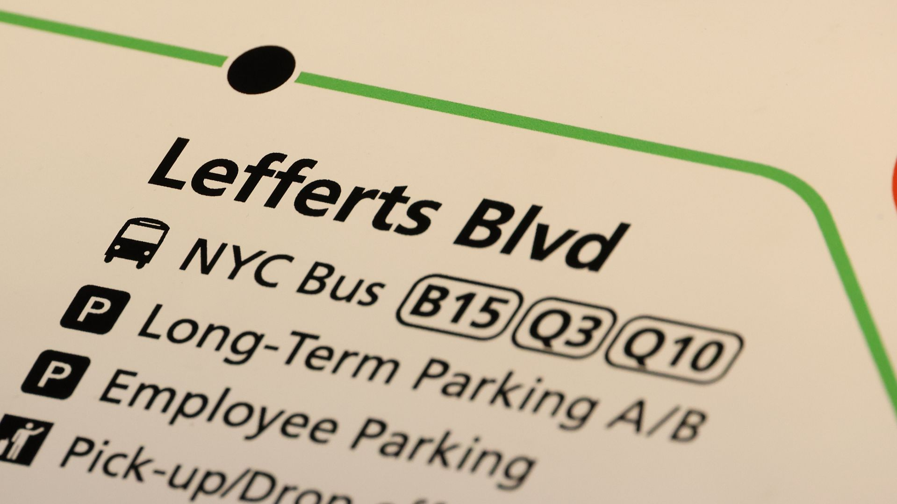

Pickup & drop-off
Convenient pick-up and drop-off areas.
Construction has moved several pickup zones — including T5 ride-app to Lot 2 and the T7 taxi stand. Find the right zone for your terminal, with current relocations.
See the pickup map →